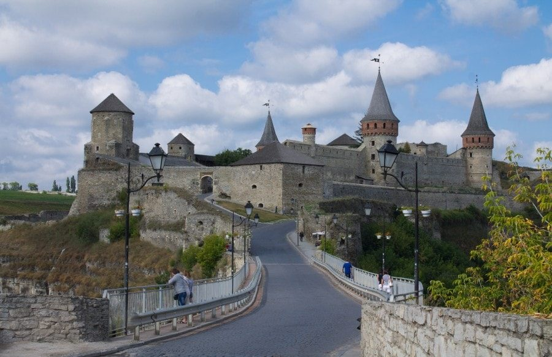
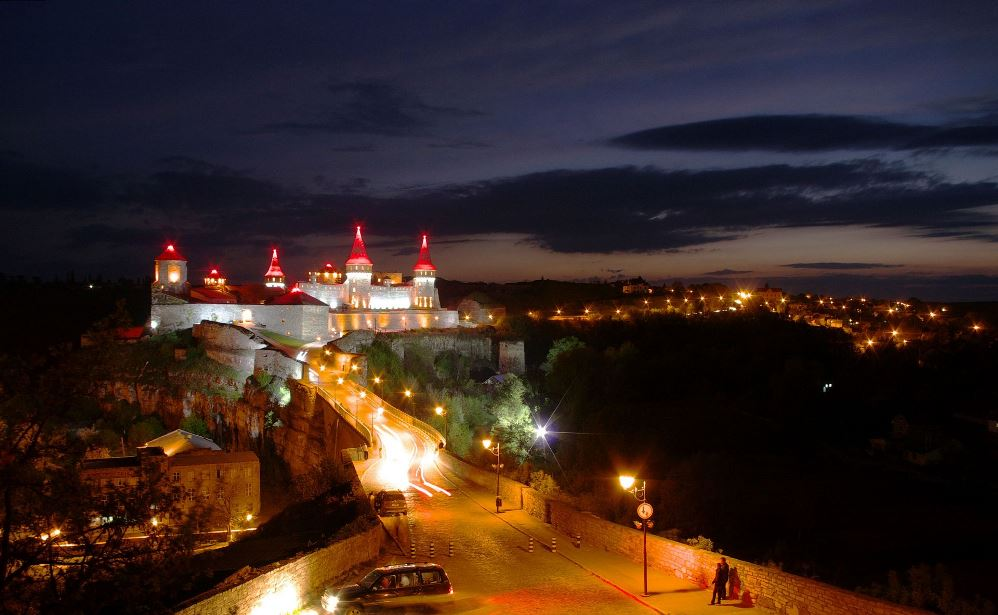
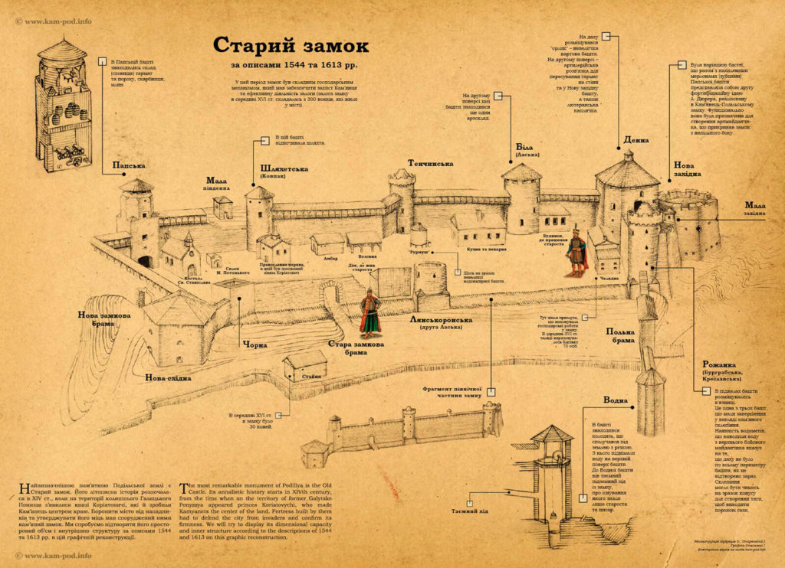

Кам’янець-Подільський замок, історія якого бере свій початок в 10-13 столітті, виник як невелика дерев’яна споруда на річці Смотрич, побудована за староруськими традиціями для охорони слов’янських поселень.
Перші двісті років існування замку були нелегкими: спочатку стіни були зруйновані пожежею, потім його захопила орда Батия, знищивши майже все населення. Увірвавшись в місто, татаро-монголи встановили своє панування, що тривало більше сорока років.

Невідомо, як би склалася доля Кам’янець-Подільського замку, якби 1362 році він не перейшов у володіння п’ятьом племінникам литовського князя Ольгерда, який розбив татаро-монгол у битві під Синіми водами. Костянтин, Борис, Федір, Юрій та Олександр, вирішують тут залишитись. Вони починають відбудову оборонного пункту, у літописі йдеться будівництво набрало високих обертів і споруди стануть надійни оборонним пунктом

Саме в 14 столітті Кам’янець-Подільський замок починає набувати того вигляду, що зберігся до наших днів. Однак, чвари між чисельними спадкоємцями сприяють переходу фортеці до рук Речі Посполитої, під покровительством якої вона знаходилась три століття (до 1793 року).
За ці роки було безліч бажаючих здолати неприступні мури Кам’янець-Подільської фортеці, однак під силу це було лише турецькому султану Магомету 4. Війську Порти вдалося зруйнувати Нову вежу та захопити місто.
Вважається, що на початку 17 століття до стін фортеці підступив хан Осман з військом, рішуче налаштований захопити замок. Побачивши його вперше, він, вражений високими стінами та мурами, спитав у своїх підлеглих, чия рука створила це диво. Аллах – відповіли йому. Нехай Аллах його і забирає
, відповів Осман, та відступив, залишивши недоторканним Кам’янець-Подільський замок.
Недарма старий замок Кам’янець-Подільський отримав славу неприступної фортеці, про яку кажуть, що вона була побудована рукою Бога, адже до неї доклала своїх зусиль сама природа: високі скелі та розлогі береги завдовжки 250 метрів заблокували прохід у місто, а збудовані людьми кам’яні стіни значно укріпили це положення. Центральна споруда займає більше 1,5 гектарів та оточена одинадцятьма вежами, що надійно захищають місто з усіх сторін.

| Ціни | |
|---|---|
| Діти до 10 років та пенсіонер | безкоштовно |
| Школярі та студенти * | 15 грн. |
| Дорослий | 30 грн. |
| *при наявності учнівського або студентського квитка | |